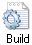

Style and Usage
This section provides guidelines on writing style and usage in ZyLAB documentation. The intent of these guidelines is to help maintain a consistent voice in ZyLAB documentation.
We use American English.
A
abbreviations and acronyms An acronym is a pronounceable word formed from the initial letter or letters of major parts of a compound term. An abbreviation is usually formed in the same way but is not pronounced as a word. Abbreviations are often lowercase or a mix of lowercase and uppercase. Acronyms are almost always all caps, regardless of the capitalization style of the spelled-out form.
Abbreviation: mph—for miles per hour; MB/s—for megabytes per second
Acronym: ROM—for read-only memory
-
When to spell out: Spell out an abbreviation or acronym on first occurrence in a chapter if you think your audience may not be familiar with it. In help documents, spell out the term when you introduce it.
-
How to spell out: When you spell out a term, generally put the spelled-out version first, with the abbreviation or acronym in parentheses.
Internet service provider (ISP)
If the abbreviation or acronym is much more familiar than the spelled-out version, you can put the abbreviation or acronym first, followed by the spelled-out version in parentheses, or you can explain that the abbreviation is “short for” the spelled-out version and place the spelled-out version in italics.
You can share your personal URL (Uniform Resource Locator).
An Internet address is sometimes called a URL, short for Uniform Resource Locator.
-
File types: Use all caps for abbreviations of file types.
a JPEG file, an AIFF file, the MP3 file
Filename extensions, which indicate the file type, should be in lowercase.
.jpg, .aif, .mp3
-
Punctuation: Don’t use periods except in abbreviations for customary (nonmetric) units of measure.
-
Plural: Don’t add an apostrophe before the s when you form the plural of an abbreviation.
CDs, ICs, ISPs
-
Latin: Avoid using Latin abbreviations.
Correct: for example, and others, and so on, and that is, or equivalent phrases
Incorrect: e.g. (for example), et al. (and others), etc. (and so on), i.e. (that is)
-
Units of measure: For detailed usage guidelines for units of measure, and for a list of abbreviations and symbols, see Chapter Units of Measure (page 47).
-able When you add able to a word ending in e, drop the e unless the word ends with a soft c or a soft g.
Correct:
browsable, deletable, sharable, sizable
changeable, pronounceable, purgeable, serviceable
abort Avoid in user documentation. Compare exit; interrupt; quit; stop.
above Do not use to mean earlier. Use previous, preceding, or earlier instead.
Do not use above to mean later.
Correct: ZyLAB Information Management Platform 6.1 and later
Incorrect: ZyLAB Information Management Platform 6.1 and above
access Consider a more precise term, such as log in to, or connect to.
activate, deactivate Avoid; instead use turn on, turn off, open, or start.
active Use active or open to refer to the program or window currently being used.
address Use address to refer to an Internet or Intranet address. Use path to refer to the hierarchical structure of a file system from root folder through file name.
administrator A person who has administrative authority for networks, servers, databases, or other information technologiy assets. Use to describe the primary account that can create other accounts, set access privileges, install software, and make systemwide settings. Don't shorten to admin. To maintain the distinction between professional administrators and ZyLAB users with administrator accounts, avoid using the noun administrator by itself. Instead, you can say a ZyLAB user with an administrator account. Don't use administrator's account or administrator's password.
Correct: You must have a ZyLAB administrator account to define these settings.
Correct: Log in with an administrator account to install software.
afterward Not afterwards.
alert Do not use alert message, or error message. Instead, use message.
allow Avoid using allow when you can restructure a sentence to make the reader the subject.
Weak: ZyLAB Workflow allow you to manage workflow processes.
Preferable: You can manage workflow processes with ZyLAB Workflow.
See also enable.
alternate Don't use when you mean alternative.
a.m., p.m. For globalization reasons, avoid in favor of 24-hour time notation. Use 00:00, not 24:00, to indicate midnight.
American National Standards Institute See ANSI.
ampersand (&) Use only when referring to the symbol on the user interface.
and/or Avoid. Choose either and or or, or rewrite the sentence.
and so on Avoid. This phrase gives no information about the class of items it is meant to represent and so can create ambiguity.
Correct: Body text is most readable in Times New Roman, Palatino, and other serif fonts.
Incorrect: Body text is most readable in Times New Roman, Palatino, and so on.
Do not use and so on to end a phrase that begins with for example or such as. These opening phrases indicate that what follows is not an exhaustive list, so adding and so on is superfluous.
Correct: Body text is most readable in serif fonts such as Times New Roman and Palatino.
Incorrect: Body text is most readable in serif fonts such as Timen New Roman, Palatino, and so on.
It is all right to use and so on to indicate a logical progression where at least two items have been named.
Correct: a, b, c and so on.
angle brackets See brackets.
ANSI Acronym for American National Standards Institute. Note capitalization. See abbreviations and acronyms for guidelines about spelling out abbreviations and acronyms.
apostrophes Use the neutral or vertical form: '.
Correct:
Click the 'Timer' icon:  .
.
Click Timer.
Click .
appear Use appear, not display, to refer to the appearance of items on the screen.
Correct: The 'Print' dialog appears.
appendix, appendixes Not appendices.
application Avoid. Use program instead.
arrow or arrow pointer Do not use. Use pointer instead.
Correct: When you click the Text tool, the pointer becomes an I-beam.
arrow keys Use lowercase in general references. Refer to the arrow keys on the numeric keypad. Do not use direction keys, directional keys, or movement keys. Refer to a specific arrow key as Left Arrow, Right Arrow, Up Arrow, Down Arrow. Capitalize and use the complete name of each arrow key when you refer to it by name.
Incorrect: Use the Up and Down Arrow keys to scroll through the document.
as Do not use as a synonym for because or while in subordinate clauses. Both uses are grammatically correct, but they make reading more difficult for the worldwide audience.
Correct:
You can use ZyFIND as a search tool.
Use the active voice whenever possible, because it is easier to translate.
Fill out your registration form while you wait for Setup to finish.
Incorrect:
Use the active voice whenever possible, as it is easier to translate.
Fill out your registration card as you wait for Setup to finish.
ASCII Acronym for American Standard Code for Information Interchange. Note capitalization. See abbreviations and acronyms for guidelines about spelling out abbreviations and acronyms.
assure See ensure, insure, assure.
asterisk (*) Not star, except when referring to the key on a telephone keypad. Indicates multiplication in programming languages and also serves as a wildcard character representing one or more characters.
as well as If it is not important to use as well as, use in addition to instead, or rewrite the sentence so that you can use and.
B
back end Avoid. Use a more specific term instead, such as server, operating system, database, or network.
backslash Use backslash to describe this character: \. See also slash.
back up, backup Two words as a verb; one word as an adjective or a noun.
Correct:
Back up the files before you turn off the computer.
Save the backup copies on a floppy disk.
backward Not backwards when you refer to direction. But in certain other contexts, such as putting a card in backwards, it’s OK to use backwards.
backward compatibility Not backwards compatibility.
b
ackward-compatible (adj.) Note hyphenation.
because vs. since Avoid using since to mean because. It is a globalization problem and in some cases it can result in ambiguity. Use because to refer to a reason and since to refer to a passage of time. If it is possible to misinterpret the meaning of since as referring to a reason, rewrite the sentence.
Correct:
Because I installed the fast modem, I can download messages very quickly.
Since installing the fast modem, I can download messages very quickly.
Ambiguous:
Since I installed the fast modem, I can download messages very quickly.
behavior Don't use behaviour (British English).
below Do not use below or later in online content (use a hyperlink instead), unless you refer to content on the same web page.
blinking Use to describe the insertion point. Don’t use flashing for this purpose.
bold When referring to bold formatting, use bold, not bolded, boldface, or boldfaced.
Boolean (adj.) Note capitalization.
braces Use braces, not curly brackets, to describe these symbols: { }. When you need to distinguish between the opening and closing braces, use left brace and right brace.
brackets Use brackets, not square brackets, to describe these symbols: [ ]. Don’t use brackets when you mean angle brackets (< >). When you need to distinguish between the opening and closing brackets, use left bracket and right bracket.
See also curly brackets; braces.
browsable Not browseable.
browse (v.) It’s OK to use browse as either a transitive verb (browse the web) or an intransitive verb (browse through a website).
browser, Internet browser, web browser Use lowercase for browser when referring to an application used to gain access to the World Wide Web and other Internet and intranet services.
bug Avoid; use problem, condition, issue, or situation instead.
bulleted Use bulleted list, not bullet list. Bullet is correct, however, in referring to the graphical symbol for a bullet (•) or to a single item, as in a bullet point.
button You click an onscreen button; you press a mechanical button.
Correct:
Click the 'Save As PDF' button.
Press the 'Reset' button.
Button names: In general, write the names of buttons exactly as they appear onscreen. If the button’s name uses sentence-style capitalization, enclose the name in single quotation marks.
Click Cancel.
Click the 'Position on screen' button.
If a button name uses all capital letters or all lowercase letters, use title-style capitalization when writing the button name in documentation.
Click the 'Save Now' button.
Buttons and icons: If an element in the user interface looks like an icon (displays a picture) but acts like a button (causes something to happen when clicked), you can call it either a button or an icon.
C
can, might, may Use can to express the capacity to do something; use might or may to suggest the possibility of doing something. Use might to connote greater doubt than may. Do not use could when you mean can. Like might, could conveys a tone of doubt that is best avoided in technical writing.
Correct:
You can log in to your account from another computer.
You might be able to connect to the Internet at a nearby hotspot.
cancel the selection Not deselect or unmark. Use deselect to refer to checkboxes.
canceled, canceling, cancelation Not cancelled, cancelling, cancellation.
capability If possible, avoid capability when you discuss features of software. Reword in terms of what the user can do with the feature.
Correct: With ZyINDEX, you can create archives.
Incorrect: ZyINDEX has the capability to create archives.
check Don’t use when you mean the action of clicking a checkbox to select an option. Use select and deselect instead.
checkbox One word. Select or deselect a checkbox.
child folder Avoid. Use subfolder or subdirectory instead.
choose Use choose when the user must make a decision. Use choose for selecting menu items. See also click; select.
Correct: Choose File > New > Mail Message.
click Use click when the user must execute an action. See also choose; select. Don't use click on.
Correct:
Click OK.
Click the 'Build' icon: .
Click the 'Save Now' button.
click and drag Don't use. You either click or drag.
Correct: Drag the icon to the Trash.
Incorrect: Click and drag the icon to the Trash.
close Users close a window, a document, or a dialog box. For programs, use exit. For network connections, use end or log off.
colons Avoid using colons in text heads. If you must use a colon in a head, capitalize the first word after the colon, regardless of its part of speech.
Correct: Setting Up: A Beginner’s Guide
color Don't use colour (British English).
commas Use a serial comma before and or or in a list of three or more items.
Correct: He sells apples, pears, and bananas.
Incorrect: He sells apples, pears and bananas.
computer Not PC or machine, regardless of audience. Do not use client or server as a synonym for computer. Use client computer or server computer instead.
connect Use connect when attaching a computer to hardware, a network or the Internet. Do not use connect as a synonym for sign in or log on.
context menu Do not use context menu or right-click menu to refer to the menu that appears when a user clicks the right mouse button in certain areas. If you must refer to it, use shortcut menu instead.
Preferable: Right-click the selected text, and then click Copy.
Control Panel Do not use the when referring to Control Panel.
copy You copy a file to a disk, not on a disk or onto a disk.
cross-references We use a single source of content to generate both print and onscreen documents.
Correct (print):
For more information, see Using Workflow (page 32).
For more information, see Workflow Manual > Using Workflow (page 32).
Correct (onscreen): For more information, see Using Workflow.
curly brackets Don’t use curly brackets to describe these symbols: { }; use braces.
current folder Use current to refer to the folder that you are currently looking at or saving something to. Do not use active or open in this context.
See also active; open.
current window Do not use. Use active window or open window instead.
cursor Do not use. Use pointer instead.
D
data Singular or plural, depending on the context. Avoid in favor of information if information makes sense in the context.
database One word.
dates
In most cases, writing the date in full letters would be best to avoid confusion accross countries. When not possible, explain the used date format.
deactivate See activate, deactivate.
default The term default refers to something that happens if the user does not take an action or does not supply a required value.
deinstall Do not use unless deinstall appears in the user interface. Refer to the user action as remove.
Delete key Not DEL key.
deselect Use deselect when the user must cancel a selection.
Correct: Deselect the 'Transparant' checkbox.
desired Avoid.
Correct: Make your changes, select the folder.
Incorrect: Make the desired changes, select the desired folder.
desktop One word; note lowercase. Refers to the background area of the screen.
dialog Use dialog for windows, like the one below, that request additional information from the user and are explicitly dismissed by clicking a button within the dialog. For example, OK, Cancel, or Print.

A dialog appears. Don’t use dialog box.
Correct: The 'Add index' dialog appears.
See also window.
dezoom Do not use; use zoom out instead.
different Do not use different to mean many or various.
different from Not different than. Make sure that the elements being compared are parallel nouns.
Correct: The Mac user interface is different from that of a Windows PC.
Incorrect:
The Mac user interface is different than that of a Windows PC.
The Mac user interface is different from a Windows PC.
dimmed Use unavailable to refer to commands and options that are in an unusable state, but use dimmed instead of hollow or grayed to describe the appearance of an unavailable command or option. Also, use appears dimmed, not is dimmed.
Correct: If the option appears dimmed, it is unavailable.
Incorrect: If the option is grayed, it is unavailable.
See also gray, grayed; unavailable.
direction keys Don’t use; use arrow keys.
directory Use folder instead. Standard UNIX term for an organizational unit, or container, used to organize files and other directories into a hierarchical structure known as a file system.
disable, disabled Avoid disable when you can use turn off or deselect. Don’t use disabled when you mean unavailable (when you refer to menu items).
disk space Use disk space, not storage or memory, to refer to available capacity on a disk.
display Don’t use when you mean desktop or screen. Don’t use display when you mean appear.
do Don’t use in phrases such as do a clean installation. Use perform instead.
document Use file when referring generically to documents and programs as well as to units of storage or file management. Use document when being more specific in referring to a type of file. For example, the Word document, your worksheet, the WordPad program, and so on.
done Do not use when you are done; it’s colloquial. Use when you have finished instead.
dot Use dot to describe the characters that appear when a user types a password in a dialog.
dotted rectangle Avoid; use this term only if you are graphically describing the element that a user drags to select a region on the screen.
double-click, double-clicking Always hyphenate. Use instead of select and choose when referring to a mouse action. Do not use double-click on.
download, downloadable One word.
drag Don’t use drag the mouse or drag the pointer. Don’t use click and drag or drag and drop. Don’t use place, put, or move when you mean drag.
Correct:
Drag the slider to change the volume.
Choose Tools > Annotate > Rectangle, and then drag to create a rectangle.
Drag your items into the order you want.
Drag the icon to the Trash.
Incorrect:
Drag the mouse to draw a rectangle.
Click and drag the icon to the Trash.
Put the icon in the Trash.
E
earlier, later Use to refer to versions of software; don’t use lower and higher or newer and older. Avoid using earlier and later to refer to other parts of a manual. Use specific cross-references when you can.
e.g. Means exempli gratia. Do not use; use for example or such as instead.
email One word; note lowercase. Do not use as a verb; use send instead.
email message Use email message to refer to an individual piece of email.
embed Not imbed.
enable Avoid. Use you can instead to refer to things the program makes easy or possible for the user. In addition to being vague and often inaccurate, enable leads to weak sentences in which the most important fact is buried in an infinitive phrase.
Correct: With ZyLAB Workflow, you can manage workflow processes.
Incorrect: ZyLAB Workflow enables you to manage workflow processes.
Do not use enable with reference to commands or other program features. Use make available, activate, or something similar; or rewrite the sentence.
Correct: To activate setting X, click the Tools menu and then click setting X.
Incorrect: To enable settings X, click the Tools menu and then click setting X.
It's OK to use enable to describe a task that makes other actions possible.
To use this website, you must enable cookies.
end Users end a network connection. For programs, use exit. For windows, documents, and dialog boxes, use close.
end user, end-user Avoid in favor of user.
ensure, insure, assure In common English usage, ensure, insure, and assure are interchangeable in many situations. To provide a consistent voice and to improve readability worldwide, make these distinctions:
Use insure to mean to provide insurance.
Use ensure to mean to make sure or to guarantee.
Use assure to mean to state positively or to make confident.
enter Do not use enter to describe inputting text-based information or data (for example, in a text field or spreadsheet, or at a command-line prompt). Use insert or type instead.
Enter key Note capitalization.
error message Don’t use. Instead, use message.
et al. Don’t use, except where called for in a bibliography; use and others.
etc. Don’t use; use and so forth or and so on.
execute Use run instead.
exit Users exit a program. For network connections, use end. For windows, documents, and dialog boxes, use close.
expand, collapse Pertains to a folder or outline. The user can expand or collapse these structures to see more or fewer subentries. A plus sign next to a folder indicates that it can be expanded to show more folders; a minus sign indicates that it can be collapsed.
extend In the sense of extending a selection.
extension, file name extension Not file extension.
Correct: The .zip extension.
extranet See Internet, intranet, extranet.
F
F1, F2, F3… Function keys on a keyboard. Capitalize the F and use plain (not italic) style and Arabic numerals. No space between letter and numeral.
face Don’t use; use font or font family, whichever is appropriate.
FAQ Abbreviation for frequently asked questions. FAQ is singular; use the article an.
far-left, far-right Avoid; use leftmost or rightmost instead.
fast key Do not use; use keyboard shortcut instead.
fewer, less Use fewer for countable items; use less for quantity or bulk.
Correct: The fewer devices in your network system, the less cable you need.
field Use to refer to the boxes that appear in windows, dialogs, webpages, or database records in which users enter information. It’s not necessary to specify text field or number field, but if a field has a name, try to use it.
figure Line art and screenshots are considered figures. You should use figures when their presence will enhance the reader’s understanding or will illustrate a procedure or point that is not evident from the text alone. Capitalize when identifying numbered figures. In general reference to a figure, use lowercase.
file Use generically to refer to documents and programs as well as to units of storage or file management. However, be more specific if possible in referring to a type of file - for example, the Word document, your worksheet, the WordPad program, and so on.
file extension Do not use. Use extension or file name extension.
file formats Abbreviations should be in all caps; filename extensions should be in lowercase.
|
Abbreviation
|
Extension
|
Full name
|
|
GIF
|
.gif
|
Graphics Interchange Format
|
|
JPEG
|
.jpg
|
Joint Photographic
|
|
PDF
|
.pdf
|
Portable Document Format
|
|
RTF
|
.rtf
|
Rich Text Format
|
|
TIFF
|
.tif
|
Tagged Image File Format
|
file locations See path.
file name Two words. Note the treatment of these similar terms: host name, user name, volume name.
file server Two words. Use only when you explain what a file server is (a computer that is dedicated to holding files shared by users on a network).
File Transfer Protocol See FTP.
finalize Do not use; use finish or complete instead.
find and replace Use find and replace as standard names for search and substitution features. Do not use search and replace.
finished Use instead of done, as in when you have finished, not the colloquial (informal) when you are done.
flashing Don’t use to describe the insertion point; use blinking for this purpose.
folder An organizational unit, or container, used to organize files and other folders into a hierarchical structure known as a file system. Do not use directory.
following Use following to introduce art, a table, or, in some cases, a list.
Correct:
The following table compares the different rates.
To install the program, do the following:
font Use font, not typeface, for the name of a typeface design (for example, Times New Roman).
font size Use font size, not type size, for the point size (for example, 12 point or 14 point).
font style Use font style, not type style, to refer to the formatting (for example, bold, italics). When referring to bold formatting, use bold, not bolded, boldface, or boldfaced. When referring to italic formatting, use italic, not italics or italicized.
frame Use only when referring to frames in a Web page.
free Don’t use to refer to available random-access memory (RAM) or storage space; use available.
FTP Abbreviation for File Transfer Protocol. Note capitalization of spelled-out version. Avoid as a verb; use transfer files instead. In the term anonymous FTP, the a is lowercase.
functionality Avoid. Use function, feature, or another appropriate term, such as behavior, performance, speed, capacity, reliability.
G
graphic Not graphical, except in graphical user interface.
gray Not grey.
grayed Don’t use; use dimmed or unavailable.
grayscale One word.
greater, better Do not use either term to designate system requirements or versions of a program. Use later instead.
greater-than sign Note hyphenation. Use greater-than sign, not greater-than symbol, to describe this symbol: >. You can also use right angle bracket if appropriate in the context.
grey Don’t use; use gray.
H
hang Don’t use as a description of the computer’s behavior in response to a system error; use a phrase such as not responding.
Correct: If the computer does not respond to input from the keyboard or mouse, a system error may have occurred.
Incorrect: If the computer hangs, a system error has probably occurred.
highlight In general, avoid using highlight, unless you are specifically referring to the ZyLAB highlight feature.
hint Avoid. Use note instead.
hit Use hit to refer to the number of times a search term has been retrieved.
Do not use hit to refer to the act of pressing a key on the computer keyboard. Use press instead.
hold down Use hold down to describe the act of pressing a key on the keyboard, the mouse button, or a mechanical button until a specified action or result occurs. Don’t use hold down when you mean press. Press means to press and quickly release a key or mechanical button.
homepage One word; note lowercase. Use to refer to a webpage that serves as the directory or entry point to a website. Don’t use to refer to an entire website.
host name Two words.
hover, mouse over Avoid these terms to refer to the action of briefly resting the mouse pointer on a button, link, and so on to see a definition or description. Instead, use rest on, pause on, or a similar word or phrase.
Do not use mouse over as a verb phrase. To describe the action of moving the mouse to a button, use a phrase such as 'move the pointer over the button.'
how to Do not capitalize to in titles.
HTML Abbreviation for Hypertext Markup Language. See abbreviations and acronyms for guidelines about spelling out abbreviations. Use lowercase when the abbreviation is part of a URL.
A file can be in HTML or an HTML file, but it is not in HTML format (because HTML is not a format).
HTTP Abbreviation for Hypertext Transfer Protocol. Use lowercase when the abbreviation is part of a URL. See abbreviations and acronyms for guidelines about spelling out abbreviations.
hyphenation In general, hyphenate two words that precede and modify a noun as a unit. Follow this rule especially when:
-
Confusion might result if the hyphen were omitted, as in parameter-list pointer or read-only memory.
-
The second word is a participle, past or present, as in binary-coded decimal or color-matching algorithm.
-
The two modifiers are a number or a single letter and a noun or a participle, as in 32-bit color or D-shaped connector.
Follow these guidelines in various specific cases:
-
Units of measure: When you use a spelled-out unit of measure in a compound adjective, hyphenate the compound (3.5-inch floppy disk). When you use an abbreviation or a metric unit of measure, including KB, MB, mm, and so on, don’t hyphenate (4 GB hard disk).
-
Location compounds: Hyphenate compounds such as lower-left corner, top-right portion.
-
Adverbs: Don’t hyphenate compounds with very or with adverbs that end in -ly.
very high speed
recently completed project
I
I-beam Note capitalization and hyphenation. Avoid specific references to the I-beam pointer (instead, refer simply to the pointer), except when necessary to describe how the pointer’s shape affects its function - for example, 'When you click text, the pointer looks like an I-beam.'
icon Use icon to describe a graphic representation of an item that a user can select and open (but does not initiate an action when clicked).
i.e. Means id est, 'that is.' Do not use; use that is instead.
if necessary Avoid. Describe the circumstance in which the action would be necessary.
Correct:
If file sharing is not on, turn it on.
If the file size is larger than the maximum your mail application allows, compress the file.
Incorrect:
If necessary, turn on file sharing.
If necessary, compress the file.
imbed Don’t use; use embed.
inactive Do not use not current.
indexes Not indices, unless you mean mathematical indices.
in order to Don’t use unless absolutely necessary; use just to.
input Avoid as a verb; use type or enter instead.
Correct: Word moves existing characters to the right as you type new text.
Incorrect: Word moves existing characters to the right as you input new text.
insert Use insert or type to describe inputting text-based information or data (for example, in a text field or spreadsheet, or at a command-line prompt). Do not use enter.
insertion point Use to describe the point at which the user types or inserts data.
Correct: The vertical blinking bar marks the insertion point.
See also cursor, pointer.
inside Not inside of.
install You install items on a disk, not onto a disk. Don’t use install as a noun. See the examples in installation.
installation Don’t use install when you mean installation.
Correct: Insert the installation disc.
Incorrect: Insert the install disc.
insure See ensure, insure, assure.
Internet, intranet, extranet The Internet refers to the worldwide collection of networks that use open protocols such as TCP/IP to communicate with each other. The Internet offers a number of services, including e-mail and the World Wide Web. Always capitalize Internet.
An intranet is a communications network based on the same technology as the World Wide Web that is available only to certain people, such as the employees of a company. Do not capitalize.
An extranet is an extension of an intranet using Internet protocols to provide authorized outside users with limited access to the intranet. Do not capitalize.
Internet addresses
Font: Use plain text for an Internet address. In print documents, don’t underline the address or use quotation marks around it.
Line breaks: Avoid breaking Internet addresses; set them on a separate line if necessary.
Punctuation: If an Internet address ends a sentence, it’s OK to use a period.
into, in to Use in to when in is part of the verb. Use into to imply motion to the inside of something.
Correct:
Log in to the computer.
Insert the CD into the disc drive.
Incorrect: Log into the computer.
IP Abbreviation for Internet Protocol. Note capitalization of spelled-out version. See abbreviations and acronyms for guidelines about spelling out abbreviations.
ISP Abbreviation for Internet service provider; not ISP provider. Note capitalization of spelled-out version. See abbreviations and acronyms for guidelines about spelling out abbreviations.
italic When referring to italic formatting, use italic, not italics or italicized.
its / it’s Don’t confuse it’s (the contraction for it is) with the possessive pronoun its.
Correct: It’s important that the department keep track of its computers.
J
jump Do not use as a noun to refer to cross-references to other Help topics or to hyperlinks. Do not use as a verb to refer to the action that follows clicking a hyperlink; use go to instead.
K
K Don’t use; use KB.
key, keys You press a key on a keyboard; you type a character, word, or phrase.
-
First occurrence in a topic: Press the Control key.
-
Thereafter: Press Control.
-
Modifier keys: Capitalize the names of modifier keys.
Ctrl (Control) key, Shift key, Alt (Alternative) key
-
Punctuation keys and nonalphanumeric keys: When a punctuation key or nonalphanumeric key is used in a combination keystroke, or as a modifier for the word key, capitalize the key name. (However, use lowercase for punctuation marks and nonalphanumeric symbols in other contexts.)
Ctrl+Shift+Hyphen
press the Hyphen key
type a hyphen
Placing the punctuation mark or symbol in parentheses after the spelled-out key name is optional, but be consistent within a document.
Ctrl+Shift+Tilde (~)
-
Keyboard shortcuts using combination keystrokes: In combination keystrokes, use the plus sign (+) to signify that the user should hold down the first key or keys while pressing the last key.
Don’t use a hyphen if each key should be pressed and released separately.
Ctrl+Shift+N
press the Esc key, then the N key
Capitalize but don’t italicize or use code font for letters used as key names.
Ctrl+C
Ctrl+X
Use this order if there is more than one modifier key: Control, Shift, Alt.
When a keyboard shortcut includes a mouse action, use lowercase for the mouse action.
Ctrl+click
-
Two-word key names: When one of the key names in a combination keystroke is two words or a hyphenated word, use dashes where you would ordinarily use the plus sign.
Shift+Right Bracket
Ctrl+Shift+Up Arrow
Ctrl+Shift+double-click
When referring to more than one key, use the full name of each key.
Correct: the Right Arrow or Left Arrow key
Incorrect: the Right or Left Arrow key
-
Keys labeled with two characters: When a key with two characters is used in a keyboard shortcut, identify the key by the lower of the two characters, unless the Shift key is part of the shortcut. If the Shift key is part of the keyboard shortcut, identify the key by the upper of the two characters.
Correct:
To close all stacks, press Ctrl+Semicolon.
For more information, press Ctrl+Shift+Question Mark.
Incorrect:
To close all stacks, press Ctrl+Colon.
For more information, press Ctrl+Shift+Slash.
When the Shift key and a key with two characters are in a combination keystroke, always show the Shift key as part of the keyboard shortcut (do not show only the upper of the two characters and assume that the user will know to press the Shift key).
Correct: To increase the diameter, press Ctrl+Shift+Plus Sign.
Incorrect: To increase the diameter, press Ctrl+Plus Sign.
keyboard shortcut Do not use key sequence or key combination.
keypress Do not use; use keystroke instead.
keystroke One word. Not keypress.
L
label, labeled, labeling Do not double the final l.
later Use instead of higher for product version numbers. For example, 'version 6.0 or later.'
See also earlier, later.
launch Don’t use when you mean to open an application.
leave Don't use when you mean to exit an application.
left Not left-hand. Use upper left or lower left, leftmost, and so on. Include a hyphen if modifying a noun, as in 'upper-left corner.'
left arrow Use to refer to a button that looks like a left-pointing arrow, such as the small arrow that you click to decrease a value in a horizontal stepper. Don’t call it the left arrow button or the left-pointing arrow.
Left Arrow key Note capitalization. When you refer to arrow keys generically, use lowercase, but capitalize and use the complete name when you refer to one or more arrow keys by name.
See also arrow keys.
left mouse button In general, use just mouse button; use left mouse button only in discussions of multiple buttons or in teaching beginning skills.
left-hand Do not use; use just left instead.
leftmost No hyphen.
left side Not left-hand side.
less vs. fewer vs. under Use less to refer to a mass amount, value, or degree. Use fewer to refer to a countable number of items. Do not use under to refer to a quantity or number.
Correct:
The new building has less floor space and contains fewer offices.
Fewer than 75 members were present.
Less than a quorum attended.
Incorrect:
Less than 75 members were present.
The new building has less offices.
Under 75 members attended.
The new building has under 10 floors.
less-than sign Note hyphenation. Use less-than sign, not less-than symbol, to describe this symbol: <. You can also use left angle bracket if appropriate in the context. Compare angle brackets.
let Avoid using let when you can restructure the sentence so that the reader is the subject. Avoid in the sense of software permitting a user to do something. Use you can instead.
Correct:
Use the Sort command to sort items in your document.
With the Sort command you can sort items in your document.
Sort items in your document with the Sort command.
like Acceptable as a synonym for such as or similar to.
link Avoid using follow a link; use click a link instead.
Correct: Click a link on the homepage to go to another page.
Incorrect: Follow the link to the page of your choice.
list box Two words. List box is a generic term for any type of dialog box option containing a list of items the user can select. In text and procedures, refer to a list box by its label and the word list, not list box.
Correct: In the Background list, click Coffee Bean.
Incorrect: In the Background list box, click Coffee Bean.
lists (bulleted) Use a bulleted list when you want to stress the parallelism of a number of options, elements, rules, or instructions that need not be presented or performed in a particular order.
lists (numbered) Use a numbered list when you want to stress the sequential nature of steps, rules, or instructions. In numbered task lists (steps), each item should be a complete sentence. Use sentence-style capitalization for each item and end each item with closing punctuation.
log in (v.), login (n., adj.), log out (v.), logout (n., adj.) Use log in to, not log into. The verbs are two words: log in and log out, whereas the nouns are login and logout (often used like adjectives in compound nouns).
Correct:
You must log in as an administrator.
If you turn on automatic login for yourself, your account opens when the computer starts up.
Incorrect: You must log into the computer.
Users log in to a file server (not log on to); users log out of a file server (not log off, log off of, or log out from).
Correct: You must log out of the server.
Incorrect:
You must log out from the server.
You must log off the server.
log on, log off Don’t use; use log in and log out.
look at Avoid; use view instead, as in 'To view the list of Help topics, click Help.'
look up Avoid. Use see.
Correct: For more information, see 'Using Workflow'.
lower Do not use to indicate product version numbers. Use earlier instead, as in 'Word version 3.0 or earlier.'
See also earlier, later.
lower left, lower right Use as a noun instead of bottom left and bottom right. Hyphenate as adjectives: lower-left and lower-right.
M
machine Don’t use when you mean computer.
may, can See can, might, may.
memory Don’t refer to the hard disk as memory; it’s hard disk space, disk space, or storage space.
menu bar Two words.
menus Anything that can be chosen in a menu is a menu item; some menu items are also menu commands (or simply commands). Don’t use menu option.
A menu item is in a menu, not on or under a menu; a menu contains items or commands.
Correct:
Choose [menu] > [item] > [submenu item].
Choose Edit > Find > Find Next.
Choose File > Save As.
Don’t use an angle bracket when you’re simply identifying which menu contains the item.
Correct: the Page Setup command in the File menu
Incorrect: the File > Preferences command
metadata One word; use lowercase.
minus sign Use minus sign, not minus symbol, to describe this symbol: –.
mode Avoid mode when you refer to software.
Correct: When you are using the paintbrush…
Incorrect: When you are in paintbrush mode…
more than vs. over Use more than to refer to quantifiable figures and amounts. Use over to refer to a spatial relationship or position or in a comparison in which more is already used.
Correct:The Design Gallery contains more than 16 million colors.
After you compress your drive, your disk will have over 50 percent more free space.
If you want the Help topic to appear over the document you are working on, click the On Top button.
mouse Drop references to the mouse as quickly as possible. Switch emphasis to the actions on the screen, such as clicking, dragging, selecting, or choosing.
movable Not moveable.
movement keys Do not use; use arrow keys instead.
multiple selection Use to refer to a selection that includes multiple items. Do not use disjoint selection or noncontiguous selection. It is all right to use adjacent selection or nonadjacent selection to emphasize that the selected items are or are not adjacent to each other. Avoid using the verb phrase 'multiply select.' Most people will initially read multiply as a verb, not as an adverb. Instead, use a phrase such as 'Select multiple items.
N
n Conventionally, a lowercase italic n refers to a generic use of a number. You can use n when the value of a number is arbitrary or immaterial.
Correct: 'Move the insertion point n spaces to the right.'
navigate Do not use to refer to the act of going from place to place on the World Wide Web or on an intranet Web. Use browse instead.
To refer to the act of going directly to a Web page or Web site, whether by typing a URL in the Address bar of a browser or by clicking a hyperlink, use go to. Avoid see in this context.
need Often confused with want. Be sure to use the term that is appropriate to the situation. Need connotes a requirement or obligation; want indicates that the user has a choice of actions.
Correct: If you want to use a laser printer, you need a laser printer driver.
Net Don’t use as a short form of Internet.
network Computers are on, not in, a network.
new In most documents, avoid describing a product or feature as new because the text will quickly become out of date. When appropriate, state the version of software in which a feature was introduced.
normal, normally Implies 'in a normal manner,' which may not be possible for everyone. Do not use to mean 'often,' 'usual,' or 'typical.' Instead, use usually, ordinarily, generally, or a similar term.
normal installation Note lowercase. Not normal install. You perform a normal installation; you don’t do a normal install.
number sign Use to describe this character: #.
O
obsolete Do not use as a verb.
OK Do not use okay.
on Use on with these elements:
-
Menus ('the Open command is on the File menu')
-
Taskbar, toolbar, ruler, and desktop ('click Start on the taskbar')
-
Disks, in the sense of a program being on a disk ('the printer drivers on Disk 4')
-
User interface ('on the user interface')
-
The screen itself (something appears 'on the screen')
-
Network ('the printer is on the network')
-
Hardware platforms ('on the pc')
Do not use on with user input actions.
Correct:
Click the right mouse button.
Click the Print icon.
Click OK.
Press Enter.
Incorrect:
Click on the right mouse button.
Click on the Print icon.
Click on OK.
Press on the Enter key.
once Don’t use when you mean after.
Correct: After you turn on the computer…
Incorrect: Once you turn on the computer…
online One word. Use to describe items to which the user gains access over a network.
Correct: You can search an online database.
-
Connection: Avoid online when you refer to the state of being connected to a network. Instead, use a specific appropriate term.
Correct:
connected to the network
logged in
Incorrect: if you’re online
-
Local files: Avoid using online to describe items (such as tutorials) that are viewed onscreen but stored on a local disk. Instead, substitute a more specific word, such as onscreen.
Avoid: To learn how to use ZyINDEX, take the online Help.
Preferable: To learn how to use ZyINDEX, take the onscreen Help.
Even better: To learn how to use ZyINDEX, take the Help.
Note that it’s OK to use online to describe tutorials and other materials that are available on the Internet.
online Help In general, use just Help.
onscreen One word.
onto, on to Use two words (on to) for the action of connecting to a network, as in 'log on to the network.' Use one word (onto) to indicate moving something to a position on top of something else, as in 'drag the icon onto the desktop.'
open Use open or active to refer to the program or window currently being used. Users open icons, folders, documents, and applications.
output Avoid as a verb; use write to, display on, print on, or print to.
outside Not outside of.
over Don’t use when you mean more than.
Correct: You can add more than 1000 songs.
Incorrect: You can add over 1000 songs.
P
pane Use only to refer to the separate areas of a split or single window. For example, the names of all the folders can appear in one pane and the contents of a selected folder in the other pane. Use lowercase for pane names, as in 'the annotation pane.'
passive voice Avoid when possible and use active voice.
patch Do not use; use update instead.
path Use path to refer to the hierarchical structure of a file system from root folder through file name. Use address to refer to an Internet or Intranet address.
To indicate a path, type first the drive name, followed by a colon and a backslash, and then the name of each folder, in the order you would open them, separated by a backslash.
For example:
C:\Documents and Settings\user1
PDF Abbreviation for Portable Document Format. No need to spell out on first occurrence. Capitalize when you refer to the file format; use lowercase for the filename extension (Installation Guide.pdf ). Don’t use a file in PDF format; use a PDF file.
please Avoid using please in instructional text and cross-references.
plus sign Not plus symbol.
p.m. Note lowercase and periods: 6:30 p.m. Use a space before the abbreviation.
pointer OK in general references, but be specific whenever appropriate: arrow, I-beam.
pop-up (adj.) Do not use as a noun. Avoid as a verb; instead, use a term that more accurately describes the action, such as open or appear.
press Use to describe the act of pressing and quickly releasing keys on the keyboard and mechanical buttons and switches. Don’t use click, hit, push, tap, or type. Don’t use press for onscreen items; use click.
problem Don’t use in phrases such as this is a known problem or this version fixes that problem. Use condition, issue, or situation. It’s OK to use problem in a general way, such as the following: If you have a problem registering, try again in a few moments.
pull-down Do not use as a noun. Avoid in describing menus except in content for software developers.
put Don’t use when you mean drag.
Correct: Drag the file to the Trash.
Incorrect: Put the file in the Trash.
Q
quality Don’t use quality alone as an adjective; include a modifier. The compound adjective is hyphenated.
Correct: broadcast-quality, high-quality, professional-quality
question-mark button Don’t use; use Help button.
quit Avoid. Use exit instead to refer to the user action of closing a program. Use close to refer to the user action of closing a document or a window. Use close to refer to the action a program takes to close itself. Use log off or end to refer to ending a user session on a computer or on a network or Internet connection.
R
radio button Avoid. Use its label or use option instead.
reboot Do not use; use restart instead, and take care to establish that it is the computer, not a program, that is restarting.
recommend Avoid using recommend or it is recommended when you can reword in terms of the user or product.
reference Don’t use as a verb; use refer to.
regular Don’t use when you mean standard, as in Use standard settings.
reinitialize Do not use to mean restart.
resizable Not resizeable.
resize Not size or grow. OK to use change the size of.
restore Use to refer to restoring an item that was deleted. Do not use undelete.
See also undelete.
right arrow Use to refer to a button that looks like a right-pointing arrow.
right Not right-hand. Use upper right or lower right, rightmost, and so on. Include a hyphen if modifying a noun, as in upper-right corner.
rightmost No hyphen.
right mouse button
right side Not right-hand side.
run (v.), running (adj.) Use running for programs or processes that operate in the background and have no graphical interface.
S
save You save a file on a disk or to a disk, not onto a disk.
screen Use to refer to what the user looks at while working on a computer. Don’t use display when you mean screen.
search field Note lowercase.
search results list Note lowercase.
select Use select when the user must select a checkbox, an item from a list to carry out a decision already made, or a section of text.
Correct:
Select the 'Transparant' checkbox.
Also see check; choose; click.
set up (v.), setup (adj., n.) Two words as a verb, one word as an adjective or a noun.
setting Use setting or value to refer to a specific value that the user can set, such as the specific color of a font.
shortcut menu Use shortcut menu to refer to the menu that appears when a user clicks the right mouse button in certain areas. However, it is advised to avoid it.
Preferable:
Right-click the selected text.
Click Copy.
should vs. must Use should only to describe a user action that is recommended but optional. Use must only to describe a user action that is required.
Avoid using should to indicate probability. Wherever possible, express certainty. When that is not possible, use may or rephrase.
shows up Don’t use; use appears.
simply Avoid. It is generally unnecessary and can sound condescending if the user does not find the task as simple as the writer does.
since, because Use since to mean during the period subsequent to the time when. Use because to mean for the reason that.
slash Use slash to describe this character: /.
software Programs that perform operations on a computer. Types of software include application software and system software. Use software alone if you don’t need to refer to a specific type of software. Don’t use software program.
space character Not blank or blank character. OK to use just space, but in many cases it’s necessary to remind the user that a space is actually a character and that margins, indention, word wrap, and page breaks can sometimes be affected by extra space characters (or a lack of them).
start Don’t use when you mean open (as in open an application).
stop A general term meaning to cause a process, command, or program to cease. Don’t use when you mean exit an application.
system administrator Use only to refer to the person responsible for administering the use of a multiuser computer system. Generally, use administrator unless you must specify a particular kind. Use network administrator only to specifically refer to the administrator of networks.
T
table of contents Do not use Table of Contents as the heading for the list of contents at the beginning of a document or file; use just Contents instead. It is correct, however, to refer generically to the table of contents.
that Use to introduce a restrictive clause; clauses beginning with that are generally not set off with commas.
Correct: This is the computer that has network access.
then In declarative sentences that consist of two or more independent clauses, then should usually be preceded by a comma and and, or by a semicolon.
Correct:
First you insert the CD, and then you double-click the icon that appears.
First you insert the CD; then you double-click the icon that appears.
In imperative sentences, as in how-to steps, that include two actions, use then - with or without and - to emphasize the sequential nature of the two actions.
Correct:
Insert the CD, and then double-click the icon that appears.
If you don’t use and, you can precede then by either a comma or a semicolon.
Correct:
Insert the CD, then double-click the icon that appears.
Insert the CD; then double-click the icon that appears.
Whichever style you choose, be consistent throughout a project.
Note that you can omit the word then if you don’t want to emphasize the sequential nature of two actions in a step.
Correct: Insert the CD, and double-click the icon that appears.
If the actions are very short, you can also omit the comma, but be consistent.
Correct: Insert the CD and double-click the icon that appears.
Avoid using then to introduce a subordinate clause that follows an if clause:
Preferable: If you save a document often, you’re less likely to lose changes.
Avoid: If you save a document often, then you’re less likely to lose changes.
time of day Follow these guidelines for times:
-
Numerals:
Use numerals for times of day.
2:00, 4:15, 7:30
-
a.m. and p.m.:
Include a.m. and p.m. (lowercase, with periods, preceded by a space) as needed.
10:45 a.m., 6:30 p.m.
-
Noon and midnight:
Use 12:00 noon and 12:00 midnight or just noon and midnight.
-
Range of times:
In text, it’s preferable to use to with a range of times.
10:00 a.m. to 2:00 p.m., (from) 1:30 to 3:00 p.m.
title bar Two words. Note lowercase.
titled Not entitled.
toggle (v.) Don’t use in user documentation. Instead, use switch, click, or turn on and turn off.
toolbar One word; note lowercase. An area containing buttons. Don’t call toolbar buttons icons or shortcuts.
top left, top right Avoid; use upper left and upper right instead.
toward Not towards.
troubleshoot (v.), troubleshooting (n., adj.) One word.
type Use type or insert to describe inputting text-based information or data (for example, in a text field or spreadsheet, or at a command-line prompt). Do not use enter. Don’t use type when you mean font or font family.
U
unavailable Use unavailable, not grayed or disabled, to describe an item such as a menu item or an option in a dialog that the user cannot select or choose because certain conditions are not met.
Correct: The Copy command is unavailable if there is no text selected.
See also dimmed.
uncheck Don’t use; use deselect.
unclick Don’t use; use deselect. See also checkbox.
undelete Do not use except to reflect the user interface or the application programming interface. Use restore instead.
Even if the product interface uses undelete, the action is still to restore.
Correct: To restore the deleted text, on the Edit menu click Undelete.
See also restore.
underline, underscore Use underline to refer to text formatting with underlined characters or to formatting. Use underscore to refer to the underscore character ( _ ).
uninstall OK to use uninstall and uninstaller, but remove is prefered. See also install.
unselected (adj.) Use to describe something that is not selected. Not deselected. Do not use for check boxes or selections; use clear the check box or cancel the selection instead.
up arrow Use to refer to the small arrow that you click to increase a value in a stepper.
Correct: Click the up arrow to increase the text indent.
Up Arrow key Note capitalization. When you refer to arrow keys generically, use lowercase, but capitalize and use the complete name when you refer to one or more arrow keys by name. See also arrow keys.
upload One word. Reword if possible, but OK to use when you refer to copying files to a server.
uppercase (n., adj.) One word; no hyphen. When used in conjunction with lowercase as a noun (or to modify a noun), use uppercase and lowercase (both words spelled out, in that order).
upper left, upper right Use instead of top left and top right.
upward Not upwards.
URL Abbreviation for Uniform Resource Locator, which is another term for an Internet address. URL is pronounced 'you-are-ell' and should be preceded by a, not an.
usable Not useable.
user If the audience of your document consists of users, avoid this term. Instead, address the reader as you.
Correct: You can burn your own music CDs.
Incorrect: Users can make movies with effects, transitions, and a soundtrack.
When the audience consists of developers or administrators, use user to refer to end users and you to address the developer or administrator.
Correct:
You may need to prevent users from accidentally making changes.
You can give users access to the server.
user group Not users group or user’s group.
user name Two words.
V
via OK to use to mean by means of, especially in relatively technical documentation.
Sometimes over, through, or by using may be more accurate and more easily understood.
VPN Abbreviation for virtual private network or virtual private networking.
visit In the context of the Internet, use visit only to talk about going to a Web site for the purpose of spending time at that site. You may also use go to in this context.
To talk about going to a specific Web page, use go to.
W
want An infinitive or a direct object should follow want in conditional statements. It’s OK to use wish by itself.
Correct:
Rename the file if you want to create [infinitive] a duplicate.
Make a copy if you want a duplicate [direct object].
Rename the file if you wish.
Incorrect: Rename the file if you want.
webpage One word. A self-contained document that can be viewed on a website. A single website can contain many webpages. You connect to (or go to) a page; you are then at that page. Text, graphics, and links, however, are on the page.
website Refers to a collection of webpages stored in a particular location. A website may be organized into several parts, sections, or areas, each of which may contain more than one page. Use part, section, or area to refer to such an entity. Use page to refer to a single webpage. Use website to refer to the entire collection.
You can browse, visit, or go to a website, but don’t use such phrases as point your browser at the website and surf the website.
where Use to introduce a list, as in code or formulas, to define the meaning of elements such as variables or symbols.
Correct:
Use the following formula to calculate the return, where:
r = rate of interest
n = number of months
p = principa
while, although, whereas While means during the time that and implies concurrent activities. Use although to mean in spite of the fact that. Use whereas to mean it being the fact that or while on the contrary.
wizard Always use lowercase for the generic term wizard. Capitalize wizard if it is part of a feature name that appears in the user interface.
X
x Follow these guidelines when you use the letter x to stand for something else:
-
Screen resolutions: Use a lowercase x in screen resolutions.
1024 x 768
[Note the space before and after the x.]
-
As a placeholder (variable): When you use x as a placeholder for replaceable numbers, the x is lowercase and in regular text.
$02xx
[The x’s represent a range of memory addresses.]
-
For a range of version numbers: Except in developer documentation, don’t use x to express a range of software version numbers, as in 10.x; use a specific number or range of numbers.
-
To designate speed: For the speed of disc drives, use a lowercase x—for example, 24x speed. There is no space between the numeral and the x.
Z
zoom OK to use zoom, zoom in, zoom in on, zoom in to, zoom out, and zoom out of.
ZyLAB Note capitalization.
ZyLAB ONE Note capitalization.